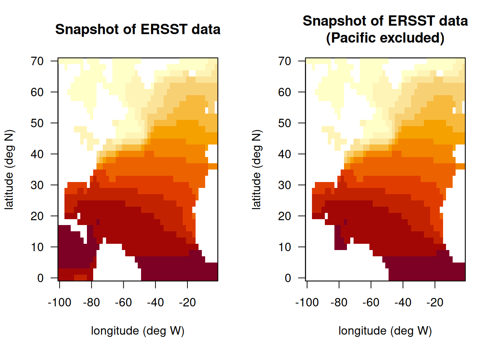

# clear workspace
rm(list = ls())
# install libraries
if(!require("maps")) install.packages("maps")
# if(!require("ncdf4")) install.packages("ncdf4")
# if(!require("lubridate")) install.packages("lubridate")
# if(!require("rerddap")) install.packages("rerddap")
library(maps)
# library(ncdf4)
# library(lubridate)
# library(rerddap)
# get ERDDAP info
# id <- info('nceiErsstv5') #https://coastwatch.pfeg.noaa.gov/erddap/griddap/nceiErsstv5.html
# download data using griddap - initially takes a long time
# uncomment lines below to update analysis
#sst_grab <- griddap(id, fields = 'sst',
# time = c('1980-01-15', '2025-12-15'),
# longitude = c(260, 358), latitude = c(0, 70))
# open nc file and extract variables
# nc <- nc_open(sst_grab$summary$filename, write=FALSE, readunlim=TRUE, verbose=FALSE)
# v1 <- nc$var[[1]]
# sst <- ncvar_get(nc, v1)
# lon <- v1$dim[[1]]$vals - 360
# lat <- v1$dim[[2]]$vals
# nc_close(nc)
# save(v1, sst, lon, lat, file = "data/ERSST.RData")
load("data/ERSST.RData")
# convert time variable to month and year
tim <- as.POSIXct(v1$dim[[4]]$vals, origin = "1970-01-01")
mon <- as.numeric(substr(tim, 6, 7))
yr <- substr(tim, 1, 4)
dim(sst)[1] 50 36 552# check conversions
tim[1:5][1] "1980-01-01 UTC" "1980-02-01 UTC" "1980-03-01 UTC" "1980-04-01 UTC"
[5] "1980-05-01 UTC"table(mon)mon
1 2 3 4 5 6 7 8 9 10 11 12
46 46 46 46 46 46 46 46 46 46 46 46 table(yr)yr
1980 1981 1982 1983 1984 1985 1986 1987 1988 1989 1990 1991 1992 1993 1994 1995
12 12 12 12 12 12 12 12 12 12 12 12 12 12 12 12
1996 1997 1998 1999 2000 2001 2002 2003 2004 2005 2006 2007 2008 2009 2010 2011
12 12 12 12 12 12 12 12 12 12 12 12 12 12 12 12
2012 2013 2014 2015 2016 2017 2018 2019 2020 2021 2022 2023 2024 2025
12 12 12 12 12 12 12 12 12 12 12 12 12 12 # plot SST on map for first time step
par(mfrow = c(1, 2))
image(lon, lat, sst[, , 100], las = 1, xlab = "longitude (deg W)", ylab = "latitude (deg N)",
main = "Snapshot of ERSST data"); box()
# fill Pacific Ocean with NAs so values are not included
sst[which(lon <= (-92)), which(lat <= 17.5), ] <- NA
sst[which(lon <= (-85)), which(lat <= 15), ] <- NA
sst[which(lon <= (-83)), which(lat <= 10), ] <- NA
sst[which(lon <= (-77)), which(lat <= 8.5), ] <- NA
sst[which(lon <= (-78) & lon >= (-80)), which(lat <= 9), ] <- NA
image(lon, lat, sst[, , 100], las = 1, xlab = "longitude (deg W)", ylab = "latitude (deg N)",
main = "Snapshot of ERSST data\n(Pacific excluded)"); box()